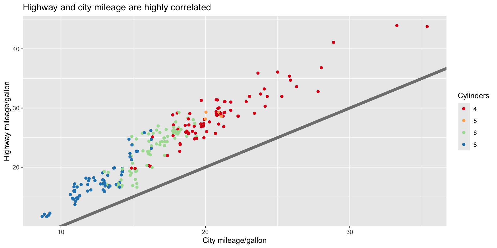
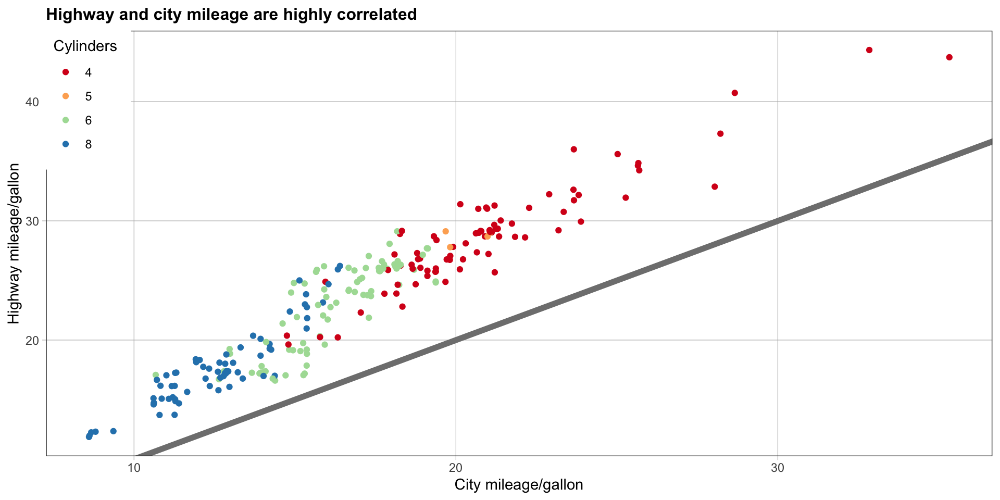
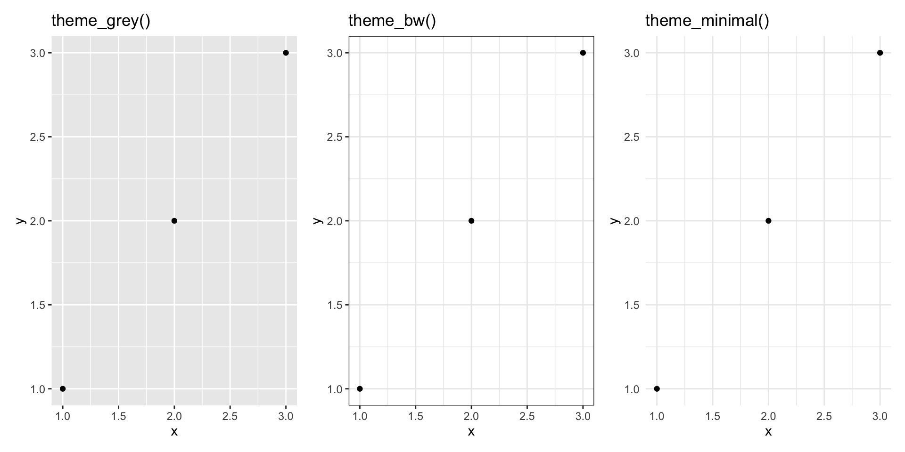
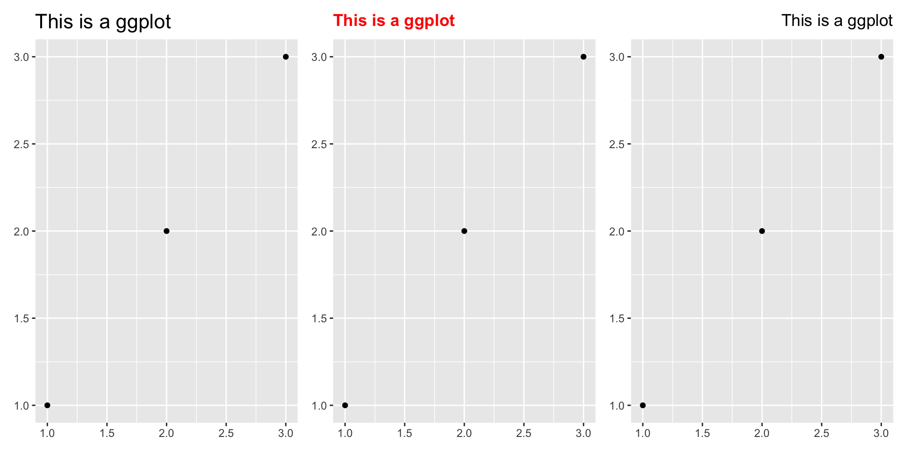
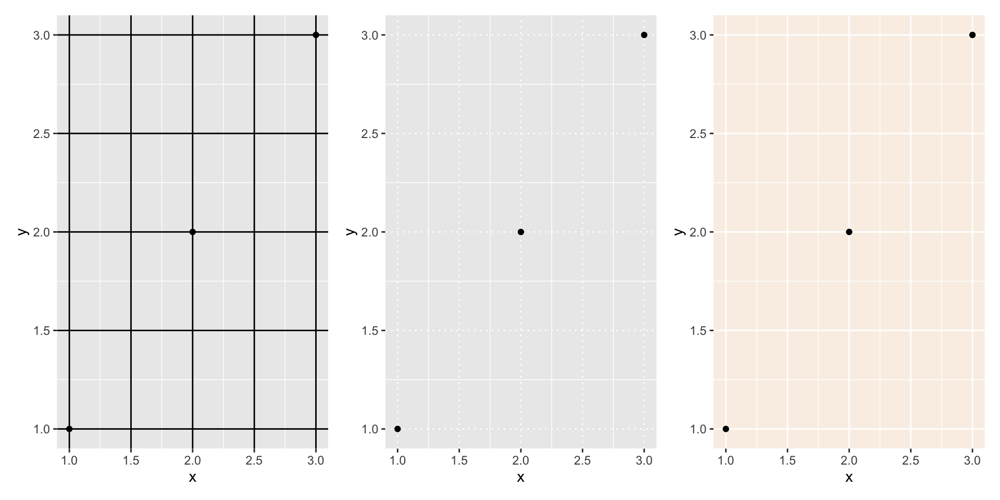
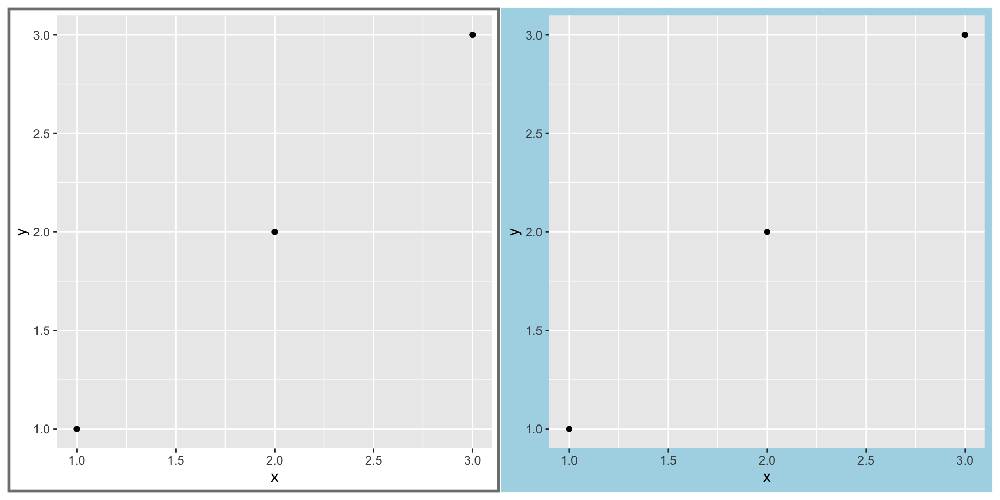
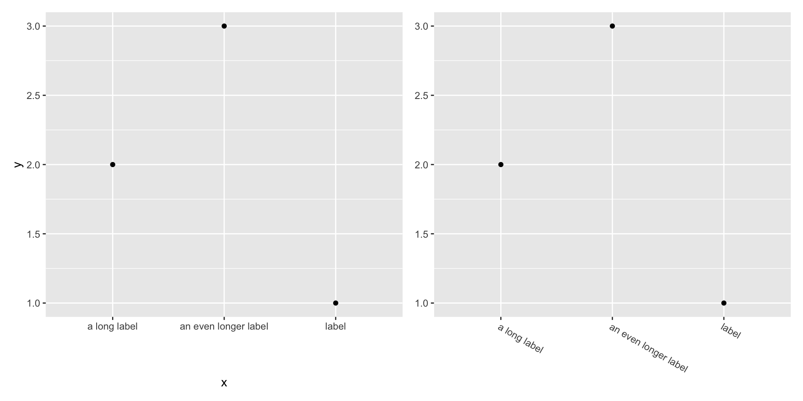
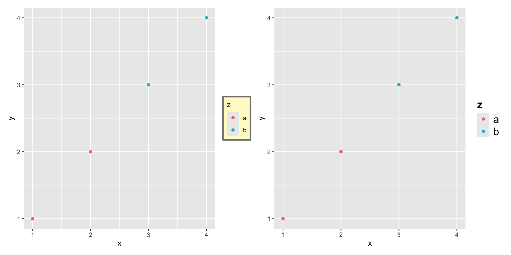
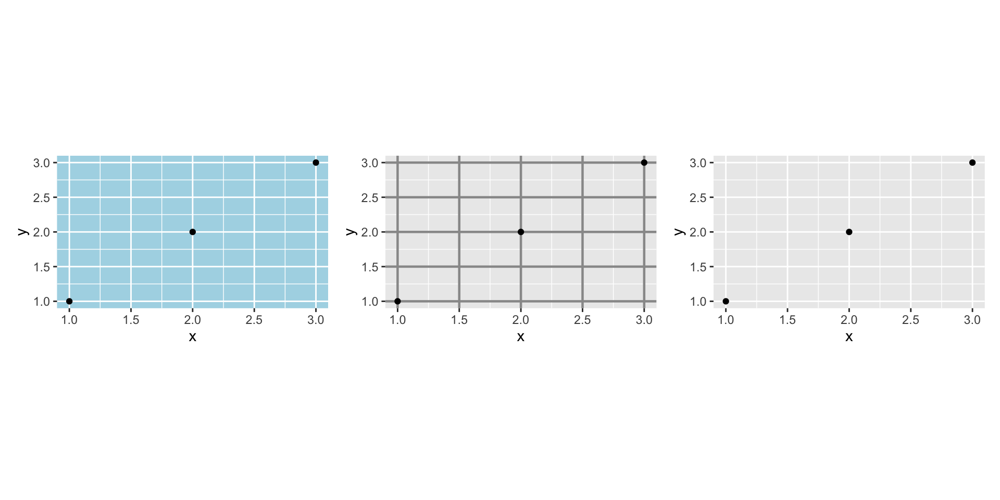
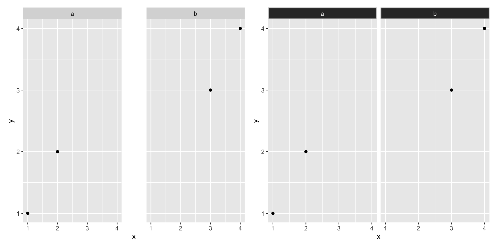

library(ggplot2)
base <- ggplot(mpg, aes(cty, hwy, colour = factor(cyl))) +
geom_jitter() + geom_abline(colour = "grey50", linewidth = 2)
labelled <- base +
labs(x = "City mileage/gallon", y = "Highway mileage/gallon",
colour = "Cylinders",
title = "Highway and city mileage are highly correlated") +
scale_colour_brewer(type = "seq", palette = "Spectral")
labelledData Analysis
Chapter 17: Themes
Yu-You Liou (NTU)
Shih Chien University
2026-06-05
Themes
Overview
The theme system gives you fine control over the non-data elements of a plot — fonts, ticks, strips, backgrounds, legends. Themes do not change how geoms render data or how scales transform it; they make the plot aesthetically pleasing or match a style guide.
This separation is the key idea: first decide how the data is displayed, then — after the plot exists — edit every detail of its rendering. The system has four components:
- Elements — the non-data parts you can control (
plot.title,axis.ticks.x, …) - Element functions — describe an element’s appearance (
element_text(),element_line(),element_rect(),element_blank()) theme()— overrides individual elements- Complete themes — like
theme_grey(), set all elements harmoniously
A Motivating Example
From Exploration to Publication
Suppose you have an exploratory plot. To publish it, you first improve labels, title, and colour scale with tools from earlier chapters:

Next you match the journal’s style guide — white background, legend inside the plot, pale major gridlines, no minor gridlines, 12pt bold title — using theme_bw() plus a theme() call:
styled <- labelled +
theme_bw() +
theme(
plot.title = element_text(face = "bold", size = 12),
legend.background = element_rect(fill = "white", linewidth = 4, colour = "white"),
legend.justification = c(0, 1),
legend.position = c(0, 1),
axis.ticks = element_line(colour = "grey70", linewidth = 0.2),
panel.grid.major = element_line(colour = "grey70", linewidth = 0.2),
panel.grid.minor = element_blank()
)
styled
Complete Themes
Built-in Themes
The signature theme is theme_grey() — a light grey background with white gridlines, designed to put the data forward while still supporting position judgements. ggplot2 ships seven more:
| Theme | Character |
|---|---|
theme_bw() |
white background, thin grey gridlines |
theme_linedraw() |
only black lines, like a line drawing |
theme_light() |
light grey lines, attention on the data |
theme_dark() |
dark cousin of theme_light() |
theme_minimal() |
no background annotations |
theme_classic() |
axis lines, no gridlines |
theme_void() |
completely empty |

Every theme has a base_size argument controlling the base font size (axis titles); the plot title is larger (1.2×) and tick/strip labels smaller (0.8×).
Apply a theme to a single plot, or change the default for all plots with theme_set():
You are not limited to the built-ins. Packages such as ggthemes add many more, e.g. theme_tufte(), theme_economist(), theme_solarized(). Complete themes are a great starting point but offer little granular control — for that, you modify individual elements.
Modifying Theme Components
The Four Element Functions
To modify one component: plot + theme(element.name = element_function()). There are four basic element functions:
element_text()— labels and headings:family,face,colour,size,hjust,vjust,angle,lineheight, plusmargin()element_line()— lines:colour,linewidth,linetypeelement_rect()— rectangles/backgrounds:fill, plus bordercolour,linewidth,linetypeelement_blank()— draws nothing and allocates no space

element_line() and element_rect() parameterise lines and backgrounds:

element_blank() suppresses an element entirely. Note that the plot reclaims the freed space — to keep the space (e.g. to align with other plots) use invisible elements via colour = NA, fill = NA instead.
To modify elements for all future plots, use theme_update(), which returns the previous settings so you can restore them:
old_theme <- theme_update(
plot.background = element_rect(fill = "lightblue3", colour = NA),
panel.background = element_rect(fill = "lightblue", colour = NA),
axis.text = element_text(colour = "linen"),
axis.title = element_text(colour = "linen")
)
# ... draw some plots ...
theme_set(old_theme) # restoreTheme Elements
The Five Element Categories
Around 40 elements control plot appearance, grouped into five categories. Plot elements affect the whole plot:
| Element | Setter | Description |
|---|---|---|
plot.background |
element_rect() |
background under everything |
plot.title |
element_text() |
plot title |
plot.margin |
margin() |
margins around the plot |

Axis Elements
| Element | Setter | Description |
|---|---|---|
axis.line |
element_line() |
axis line (hidden by default) |
axis.text / .x / .y |
element_text() |
tick labels |
axis.title / .x / .y |
element_text() |
axis titles |
axis.ticks |
element_line() |
tick marks |
axis.ticks.length |
unit() |
tick length |
axis.text sets both axes at once; axis.text.x / .y inherit from it and override per axis. The most common tweak is rotating long x labels — negative angles look best, with hjust = 0, vjust = 1:

Legend Elements
| Element | Setter | Description |
|---|---|---|
legend.background |
element_rect() |
whole-legend background |
legend.key |
element_rect() |
background behind keys |
legend.key.height / .width |
unit() |
key dimensions |
legend.text |
element_text() |
key labels |
legend.title |
element_text() |
legend name |
Layout is governed separately by legend.position, legend.direction, legend.justification, and legend.box (see §11.7).
df3 <- data.frame(x = 1:4, y = 1:4, z = rep(c("a", "b"), each = 2))
b3 <- ggplot(df3, aes(x, y, colour = z)) + geom_point()
a <- b3 + theme(legend.background = element_rect(fill = "lemonchiffon", colour = "grey50", linewidth = 1))
b <- b3 + theme(legend.text = element_text(size = 15), legend.title = element_text(size = 15, face = "bold"))
library(patchwork)
(a|b)
Panel Elements
| Element | Setter | Description |
|---|---|---|
panel.background |
element_rect() |
panel background (under data) |
panel.border |
element_rect() |
panel border (over data) |
panel.grid.major / .minor |
element_line() |
grid lines |
aspect.ratio |
numeric | panel aspect ratio |
panel.background is drawn under the data, panel.border over it — so always set fill = NA when overriding the border. aspect.ratio controls the panel, not the whole plot:

Faceting Elements
| Element | Setter | Description |
|---|---|---|
strip.background |
element_rect() |
background of panel strips |
strip.text / .x / .y |
element_text() |
strip text |
panel.spacing / .x / .y |
unit() |
margin between facets |
strip.text.x affects both facet_wrap() and facet_grid(); strip.text.y affects only facet_grid().
df4 <- data.frame(x = 1:4, y = 1:4, z = c("a", "a", "b", "b"))
bf <- ggplot(df4, aes(x, y)) + geom_point() + facet_wrap(~z)
a <- bf + theme(panel.spacing = unit(0.5, "in"))
b <- bf + theme(strip.text = element_text(colour = "white"),
strip.background = element_rect(fill = "grey20", colour = "grey80", linewidth = 1))
library(patchwork)
(a|b)
Saving Your Output
Raster vs. Vector
When exporting a plot you choose between two output families:
- Vector graphics (pdf, svg) describe drawing operations, so they are effectively infinitely zoomable with no loss of detail. Prefer these unless you have a reason not to.
- Raster graphics (png, jpg) are arrays of pixels with a fixed optimal size. Use them when the plot has thousands of objects (a vector file would be huge and slow) or when embedding in MS Office, which has poor vector support.
ggplot2 provides ggsave(), optimised for interactive use — call it right after drawing a plot:
Key arguments:
filename— the file extension selects the device automatically (.eps,.pdf,.svg,.png,.jpg,.tiff, …)width,height— output size in inches (defaults to the on-screen device size)dpi— resolution for raster output (300 for print, 600 for high-resolution, 96 for screen)
Exercises
Create the ugliest plot you can, combining as many garish
theme()settings as possible. Which elements have the biggest visual impact?theme_dark()darkens only the inside of the plot. Change the plot background to black too, then update the text colours so the labels remain readable.Build an elegant theme that uses “linen” as the background colour and a serif font for all text.
Reproduce the publication-ready
mpgplot from the motivating example: start fromtheme_bw()and use a singletheme()call to move the legend inside, pale the major gridlines, drop the minor gridlines, and bold the 12pt title.Systematically vary
hjustfor a multiline plot title. Why doesvjusthave no visible effect on the title?Compare
panel.backgroundagainstpanel.border. Why must you setfill = NAwhen overriding the border?Save the same plot as both a
.pdfand a.pngat 600 dpi withggsave(). When would you choose each format?
Acknowledgement
Copyright notice. These teaching materials have been adapted from ggplot2: Elegant Graphics for Data Analysis (3e). All rights are reserved by the original authors and publishers.
Non-commercial use only. These materials are strictly intended for educational purposes and must not be used for commercial gain or profit.
Proper attribution. Any reproduction, distribution, or use of these materials must provide proper attribution to the original source.
References

ggplot2: Elegant Graphics for Data Analysis